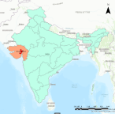

Problem definition Ahmadabad
Background
The city of Ahmadabad is the largest city in the state of Gujarat and is one of the most populous in India (Figure 1). According to the most recent census, conducted in 2011, the city had a population of 5.5 million people. The scheduled 2021 census was postponed due to Covid, thus the current population size is unknown, but an estimate suggests that the city has grown to 8 million people.
In 2010, the city suffered a heat-related excess mortality of 1344 people during the heatwave when the temperature soared to 46.8 degree Celsius. From this experience, the city developed its first Heat Action plan in 2013, which is the first of its kind published in India. Currently in its 6th iteration, the Heat Action Plan of 2019 proposes four strategies to reduce the impacts of extreme heats on its vulnerable population. The main strategies are (1) to increase public awareness and community outreach to communicate the risk of heat waves (2) to initiate an early warning system (3) to increase the capacity among health care professionals to respond to health related illness and (4) to reduce health exposure and promote adaptive measures which includes a city-wide Cool Roofs Programme.
The ethos of the Action Plans that is apparent across the four strategies is protection of the vulnerable population. For example, the Action Plans suggest that community outreach for public awareness raising, implementation of an early warning system and promotion of adaptive measures should focus vulnerable populations. In order to achieve this, identification of areas of vulnerable populations is a key step. Thus, the city is tasked to identify vulnerable communities and areas of high risk, in order to implement the Heat Action Plans.
Problem definition
However, the urban areas of Ahmadabad is over 1800 squared kilometers, 3 times the size of the greater London. It is a daunting task to systematically identify the areas of high risk and vulnerable populations and neighbourhoods.The Heat Action Plans mandates that creating a list of high risk areas should be done each year before the arrival of the summer but how it should be created is not specified.
The city recognises that outdoor workers, low-income communities or slum communities are amongst the most vulnerable to the extreme heat. Thus, we propose to use Earth Observation data to help the city identify the areas of high temperature and low-income slum communities so that the city will be able to execute the Heat Action Plans without delay.
Compliance with development agandas and goals
Our work will contribute to the achievement of the Sustainable Development Goals 11, “to make cities inclusive, safe, resilient, and sustainable”. In particular, as the city becomes able to implement the adaptive measures after identification of high risk and vulnerable neighbourhoods, it will contribute to the target 11.b of SDG “to increase the number of cities… adapting and implementing integrated policies and plans towards ..mitigation and adaptation to climate change… in line with the Sendai Framework for Disaster Risk Reduction.
Benefit to the city
As mentioned above, our work will identify high risk areas and low-income, slum communities who are most vulnerable. According to the 2011 India census, the city of Ahmedabad had a slum population of roughly 450,000 people. However, with the city’s growth, it is expected that slum population also has increased and slum areas may have expanded. As results of the next census will not become available until further 2 years or even more, our work will provide the much needed information about where the vulnerable communities are in addition to where the parts of the city most vulnerable to extreme heat.